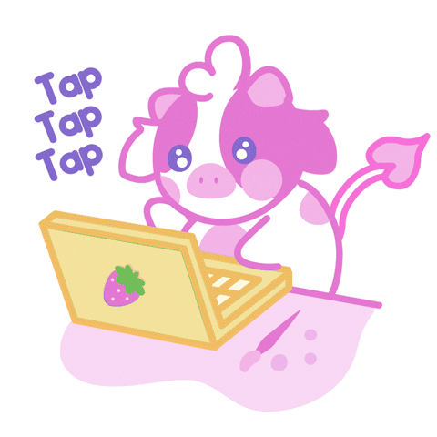

Introducción a las Tecnologías de la Información y la Comunicación

I. Fundamentación
En la actualidad se hace cada día más relevante el uso de las Tecnologías de la Información y la Comunicación (TIC), como concepto general que abarca la utilización de múltiples medios tecnológicos o informáticos para almacenar, procesar y difundir todo tipo de información, visual, digital o de otro tipo con diferentes finalidades, como forma de gestionar, organizar, ya sea en el mundo laboral, en la dimensión educativa, etc., con el fin de agilizar la realización de distintos procesos laborales, educativos y de otra índole, como así también para facilitar la comunicación entre las personas, conectadas en redes.
Internet y sus tecnologías evolucionan vertiginosamente: la red de redes pasó de una web más bien estática y pasiva, denominada 1.0, hacia la actualmente vigente (2.0), que involucra a los internautas a participar, publicar y compartir recursos, experiencias, mejores prácticas, casos de éxito e investigaciones, además de fomentar la expresión de sus opiniones, interactuando a través de distintas herramientas que ofrece, a tal punto que ya se habla y se perfila, como realidad de un futuro cercano, la generación de la web semántica o 3.0, con más posibilidades y sistemas más inteligentes.
Es por ese motivo que la Universidad Autónoma de Asunción ha tomado conciencia de esta necesidad y ofrece desde el año 2008 la asignatura denominada “Introducción a las Tecnologías de la Información y la Comunicación", con el fin de apuntar hacia la formación de un egresado con mejores competencias para hacer frente a los retos del mundo profesional actual, utilizando en forma solvente a las TIC aplicadas a las situaciones que hubiera lugar.
II. Objetivos
2.1 Objetivo general
Introducir al participante en el uso de la tecnología de la información y comunicación, utilizando distintas herramientas disponibles en Internet, con el fin de volver más eficaz y eficiente distintos procesos comunicacionales de trabajo, relacionadas a la dimensión académica, laboral y/u otras.
2.2 Objetivos específicos
- Desarrollar destrezas orientadas hacia el uso de Internet, en cuanto al manejo de navegadores, buscadores, del correo online, utilizando herramientas de traducción allí disponibles y utilizando, en forma general, el e-campus como plataforma virtual educativa para el estudio vía e-learning.
- Explicar el significado de sociedad de la información, describiendo la evolución referida a la situación de las TIC en el Paraguay, el desnivel social originado por la brecha digital y los objetivos del plan maestro de TIC.
- Brindar al participante las recomendaciones iniciales acerca de la seguridad del usuario de Internet, con el fin de evitar situaciones que puedan complicarla a él y a su equipo informático.
- Utilizar eficazmente bases de datos digitales, con el fin de que se constituyan en un elemento clave para la realización de trabajos de investigación científica, al ofrecer recursos caracterizados por un alto rigor académico.
- Participar de una manera interactiva en comunicaciones online, entre ellas: el chat, la videollamada y la video conferencia, el aula virtual, como así también analizando las nuevas funcionalidades de los celulares de última generación que permiten el m-learning.
- Caracterizar a la web 2.0, sus herramientas, bondades y peligros, discerniendo además entre el significado de ser un nativo digital y él de ser un inmigrante digital.
- Practicar la sindicación de contenidos disponibles en sitios web, reconociendo paralelamente la utilidad de los marcadores sociales.
- Crear un blog focalizado en el área de interés del participante y complementado con accesorios que lo enriquezcan.
- Gestionar fotografías, presentaciones y videos en Internet, haciendo uso de repositorios y editores disponibles al efecto, que permiten compartir los recursos con los internautas.
- Acceder a recursos de audio online: escuchar música, publicar una estación de música online, encontrar radioemisoras que funcionan en Internet y gestionando la conversión de archivos de audio a distintos formatos de archivo.
- Trabajar en forma colaborativa a través de la creación y el uso de wikis, identificando el uso de los mismos.
- Alojar documentos en el ciberespacio, identificando discos duros virtuales y sistemas operativos en línea, como así también manejando el concepto de compartir un documento entre varios autores, contribuyendo colaborativamente en su redacción.
- Potenciar la identidad digital personal y comercial, utilizando las redes sociales y sus aplicaciones.
- Reconocer el funcionamiento del comercio electrónico, el mecanismo de realizar transacciones comerciales vía Internet, identificando catálogos para la compra-venta y la subasta, y tomando conciencia del significado de la firma electrónica.
- Utilizar la pizarra digital, su software y herramientas para realizar presentaciones dinámicas, atractivas e interactivas.
- Valorar la importancia del derecho intelectual y de las licencias, como así también del software libre, diferenciando los conceptos referidos al área, entre ellos: los derechos de autor, creative commons, los tipos de licencia, el copyright, etc.
III. Contenido del programa
Sociedad de la Información y TIC. Uso de Internet. Web 1.0 / Web 2.0. Herramientas de comunicación online y dispositivos móviles. Bases de datos digitales y Redes avanzadas. Redifusión (o sindicación) de contenidos web. Marcadores sociales. Blogs. Microblogging. Multimedia: Fotografías, Vídeos, Presentaciones online, Audios y Podcast. Wikis. Mapas geográficos online. Mapas conceptuales online. Ofimática online. Presencia digital: personal y comercial. Redes Sociales. Yo digital (Avatar). Comercio electrónico. Pizarra electrónica. Derechos intelectuales y licencias. Software Libre. Ofimática: Procesador de texto, Planilla electrónica, Presentaciones gráficas.
IV. Programa analítico
- Sociedad de la Información y TIC: Sociedad de la Información. Situación de las TIC en el Paraguay. Brecha digital. Plan maestro de TIC de Paraguay. Plan Director. Pautas para la seguridad del usuario de Internet: el malware y la ingeniería social.
- Uso de Internet: Navegadores. Buscadores. Correo online. Herramientas de traducción online. Periódicos Online. ¿Qué es e-learning? E-learning 1.0 vs. 2.0. Uso del e-campus. Foros de debate. Navegadores: extensiones, complementos y widgets.
- Web 1.0 / Web 2.0: Concepto de Web 2.0. Características de la Web 2.0 y proyección hacia la Web 3.0. Nativos e inmigrantes digitales. Competencia digital. Valores facilidades y peligros de la Web. Nuevas formas de delitos. Las herramientas Web 2.0.
- Herramientas de comunicación online y dispositivos móviles: Chat. Videollamada. Videoconferencia. Aulas virtuales. Telefonía Celular. Mensajes de Texto. M-learning.
- Bases de datos digitales y Redes avanzadas: Bibliotecas digitales. Bases de datos: ProQuest, EBSCO, eLibro y otras. Búsqueda de información académica: criterios a tener en cuenta. Redes avanzadas. Red Arandú. Red CLARA.
- Redifusión (o sindicación) de contenidos web: RSS. Sindicar contenidos. Google Reader. Páginas de inicio o escritorios virtuales.
- Marcadores sociales: Delicious. Etiquetado social. Folcsonomía (Nube de tags).
- Blogs: Concepto. Editores para blogs y navegadores. Microblogging: Twitter. Cómo editar un blog.
- Multimedia I: Fotografías: Repositorios de fotos: Flickr y Picasa. Editores online. Compartir imágenes.
- Multimedia II: Vídeos: Repositorios de videos: Youtube y Google Videos. Editores online. Compartir videos, comunidades. Vodcasts.
- Multimedia III: Presentaciones online: Compartir presentaciones online: Slideshare. Publicaciones Open.
- Multimedia IV: Audios y Podcast: Escuchar música online. Publicar una estación de música online. Radios online. Convirtiendo formatos de archivos.
- Wikis: Trabajo colaborativo. Cómo trabajar en una Wiki. Creación de una Wiki en grupo. Ejemplos de wikis conocidas. La herramienta de Wiki en el e-campus.
- Mapas geográficos online: Mapas como un recurso. Herramientas de mapas disponibles (Google Maps). Creando un mapa.
- Mapas conceptuales online: El poder de los organizadores gráficos. Mapas conceptuales online. Líneas del tiempo.
- Ofimática online: Discos duros virtuales. Alojando un documento en el ciberespacio. Google Docs. Sistemas Operativos en línea. Un documento, diversos autores. Redactando en equipo.
- Presencia digital: personal y comercial. Redes Sociales. Yo digital (Avatar): Estructura de las redes sociales. Redes sociales más conocidas. Facebook y sus herramientas. Análisis de su importancia y trascendencia en el mundo de hoy. Redes profesionales: LinkedIn y Xing. Presencia digital: personal y comercial. Yo digital (Avatar).
- Comercio electrónico: Cómo comprar en Internet. Cómo vender en Internet. Tiendas virtuales. eBay y PayPal. Cuidados a la hora de realizar transacciones online. Firma electrónica.
- Pizarra electrónica: Cómo utilizar una pizarra digital. Componentes de hardware. El software que utiliza y sus herramientas. Usos didácticos.
- Derechos intelectuales y licencias. Software Libre: Derechos de autor. Creative Commons. Tipos de licencia. Copyright. Copyleft. Software Libre Vs. Comercial.
- Ofimática: Procesador de texto. Planilla electrónica. Presentaciones gráficas: Carga y edición de documentos. Creación y edición de planillas electrónicas. Preparación de presentaciones multimedia.
V. Metodología
El curso se desarrolla con la metodología e-Learning, a distancia a través de la plataforma e-campus, dentro de la misma se incluyen los contenidos del curso, así como todas las herramientas a usar en el desarrollo del mismo. La navegación por el curso está dirigida y orientada al aprendizaje, por lo que los alumnos disponen en todo momento de una indicación del lugar en el que se sitúan. El curso incluye, además, anotaciones, demostraciones, saber más y pequeñas tareas sobre los contenidos de los módulos.
Para el inicio del curso se desarrolla una clase presencial de orientación, donde se da información sobre la metodología del curso.
El curso se desarrolla de una manera eminentemente práctica acompañada de trabajos prácticos semanales.
El(La) profesor(a) desarrolla las orientaciones para las clases virtuales explicando brevemente los diferentes conceptos y tópicos contenidos en el programa de estudios de la materia que se irá desarrollando mediante ejercicios y casos prácticos que se resuelven con la activa participación del alumno(a) a través de la plataforma e-campus.
El (La) profesor(a) entrega por medio de la plataforma e-campus los trabajos prácticos individuales y grupales que deben ser resueltos y entregados en el plazo asignado por el(la) profesor(a), para evaluar la marcha de la clase, y que son tenidos en cuenta a la hora de calificar a los(as) alumnos(as).
El (La) profesor(a) asesorará a los alumnos en la marcha de los trabajos prácticos a través de plataforma e-campus, utilizando los servicios que la misma ofrece tales como foros, mensajerías, e-mails, además vía telefónica.